જો આ પ્રશ્નમાં ભૂલ થઈ હોય, તો ફરી જુઓ: સંદર્ભ fs-id1801021.
જો આ પ્રશ્નમાં ભૂલ થઈ હોય, તો ફરી જુઓ: સંદર્ભ fs-id1342104.
ગુણાકારની લખાવટનો ઉપયોગ કરો
સિક્કાની 3 આડી હરોળ છે; દરેક હરોળમાં 8 સિક્કા છે.
ગુણાકારની ક્રિયાનાં પ્રતીકો
| ક્રિયા | લખાવટ | પદાવલી | આ રીતે વાંચો | પરિણામ |
|---|---|---|---|---|
- ⓐ
- ⓑ
- ⓒ
ઉકેલ
- ⓐ આને આપણે સાત ગુણ્યા છ વાંચીએ છીએ અને પરિણામ છે સાત અને છનું ગુણનફળ.
- ⓑ આને આપણે બાર ગુણ્યા ચૌદ વાંચીએ છીએ અને પરિણામ છે બાર અને ચૌદનું ગુણનફળ.
- ⓒ આને આપણે છ ગુણ્યા તેર વાંચીએ છીએ અને પરિણામ છે છ અને તેરનું ગુણનફળ.
- ⓐ
- ⓑ
- ⓐ આઠ ગુણ્યા સાત; આઠ અને સાતનું ગુણનફળ
- ⓑ અઢાર ગુણ્યા અગિયાર; અઢાર અને અગિયારનું ગુણનફળ
- ⓐ
- ⓑ
- ⓐ તેર ગુણ્યા સાત; તેર અને સાતનું ગુણનફળ
- ⓑ પાંચ ગુણ્યા સોળ; પાંચ અને સોળનું ગુણનફળ
પૂર્ણ સંખ્યાઓનો ગુણાકાર નમૂના દ્વારા દર્શાવો
ઉકેલ
8 ચકતીઓની એક આડી હરોળ.
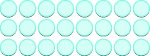
ચકતીઓની 3 આડી હરોળ છે; દરેક હરોળમાં 8 ચકતીઓ છે.
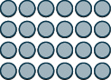
ચિત્રમાં વર્તુળો વડે 4 × 6નો ગુણાકાર દર્શાવેલો છે.
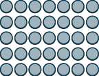
ચિત્રમાં વર્તુળો વડે 5 × 7નો ગુણાકાર દર્શાવેલો છે.
પૂર્ણ સંખ્યાઓનો ગુણાકાર કરો
| × | 0 | 1 | 2 | 3 | 4 | 5 | 6 | 7 | 8 | 9 |
|---|---|---|---|---|---|---|---|---|---|---|
| 0 | 0 | 0 | 0 | 0 | 0 | 0 | 0 | 0 | 0 | 0 |
| 1 | 0 | 1 | 2 | 3 | 4 | 5 | 6 | 7 | 8 | 9 |
| 2 | 0 | 2 | 4 | 6 | 8 | 10 | 12 | 14 | 16 | 18 |
| 3 | 0 | 3 | 6 | 9 | 12 | 15 | 18 | 21 | 24 | 27 |
| 4 | 0 | 4 | 8 | 12 | 16 | 20 | 24 | 28 | 32 | 36 |
| 5 | 0 | 5 | 10 | 15 | 20 | 25 | 30 | 35 | 40 | 45 |
| 6 | 0 | 6 | 12 | 18 | 24 | 30 | 36 | 42 | 48 | 54 |
| 7 | 0 | 7 | 14 | 21 | 28 | 35 | 42 | 49 | 56 | 63 |
| 8 | 0 | 8 | 16 | 24 | 32 | 40 | 48 | 56 | 64 | 72 |
| 9 | 0 | 9 | 18 | 27 | 36 | 45 | 54 | 63 | 72 | 81 |
શૂન્ય વડે ગુણાકારનો ગુણધર્મ
- ⓐ
- ⓑ
ઉકેલ
| ⓐ | |
| કોઈ પણ સંખ્યા અને શૂન્યનું ગુણનફળ શૂન્ય છે. | |
| ⓑ | |
| શૂન્ય વડે ગુણાકાર કરતાં શૂન્ય મળે છે. |
- ⓐ
- ⓑ
- ⓐ
- ⓑ
- ⓐ
- ⓑ
- ⓐ
- ⓑ
ગુણાકારનો તટસ્થતાનો ગુણધર્મ
- ⓐ
- ⓑ
ઉકેલ
| ⓐ | |
| કોઈ પણ સંખ્યા અને એકનું ગુણનફળ એ જ સંખ્યા છે. | |
| ⓑ | |
| એક વડે ગુણાકાર કરવાથી કિંમત બદલાતી નથી. |
- ⓐ
- ⓑ
- ⓐ
- ⓑ
- ⓐ
- ⓑ
- ⓐ
- ⓑ
ગુણાકારનો ક્રમવિનિમયનો ગુણધર્મ
- ⓐ
- ⓑ
ઉકેલ
| ⓐ | |
| ગુણાકાર કરો. | |
| ⓑ | |
| ગુણાકાર કરો. |
- ⓐ
- ⓑ
- ⓐ
- ⓑ
ઊભી ગોઠવણીમાં 27 ગુણ્યા 3નો પ્રશ્ન છે. એક તીર આગળ લઈ જવાયેલો 2 દર્શાવે છે, જે 3 × 7 = 21માંથી મળ્યો છે અને દશકના સ્થાને છે. બીજું તીર બાકી રહેલો 1 દર્શાવે છે, જે 3 × 7 = 21માંથી મળ્યો છે અને નીચે એકમના સ્થાને લખેલો છે.
ઊભી ગોઠવણીમાં 27નો 3 વડે ગુણાકાર કરતાં 81 મળે છે. તીર દર્શાવે છે કે “8”, જે 81માં છે, આમાંથી મળે છે: (3 × 2) અને આગળ લઈ જવાયેલો “2”, જે 3 × 7 = 21માંથી મળ્યો હતો.
ઉકેલ
| સંખ્યાઓ એવી રીતે લખો કે અંકો અને એકની નીચે એક આવે. | |
| ગુણાકાર કરો: ગુણ્યા આ સંખ્યાના એકમના સ્થાનનો અંક: | |
| આ ગુણનફળના એકમના સ્થાને લખો અને દશક આગળ લઈ જાઓ. | |
| ગુણાકાર કરો: ગુણ્યા આ સંખ્યાના દશકના સ્થાનનો અંક: . આગળ લઈ જવાયેલા દશક ઉમેરો. . |
|
| આ ગુણનફળના દશકના સ્થાને લખો. |
ઉકેલ
| સંખ્યાઓ એવી રીતે લખો કે અંકો અને એકની નીચે એક આવે. | |
| ગુણાકાર કરો: ગુણ્યા આ સંખ્યાના એકમના સ્થાનનો અંક: | |
| આ ગુણનફળના એકમના સ્થાને લખો અને દશકના સ્થાને આગળ લઈ જાઓ. ગુણાકાર કરો: ગુણ્યા આ સંખ્યાના દશકના સ્થાનનો અંક: . | |
| આગળ લઈ જવાયેલા દશક ઉમેરતાં મળે છે . આ ગુણનફળના દશકના સ્થાને લખો અને 4 સોના સ્થાને આગળ લઈ જાઓ. |
|
| ગુણાકાર કરો: ગુણ્યા આ સંખ્યાના સોના સ્થાનનો અંક: આગળ લઈ જવાયેલા સો ઉમેરતાં મળે છે આ ગુણનફળના સોના સ્થાને લખો અને હજારના સ્થાને લખો. |
ગુણનફળ શોધવા બે પૂર્ણ સંખ્યાઓનો ગુણાકાર કરો.
- સરખી સ્થાનકિંમતના અંકો એકની નીચે એક આવે તેમ સંખ્યાઓ લખો.
- દરેક સ્થાનકિંમતના અંકોનો ગુણાકાર કરો.
- નીચેની સંખ્યાના એકમના સ્થાનથી શરૂ કરીને જમણેથી ડાબે જાઓ.
- નીચેની સંખ્યાના એકમના અંકનો ગુણાકાર ઉપરની સંખ્યાના એકમના અંક વડે, પછી દશકના અંક વડે અને એમ આગળ કરો.
- કોઈ સ્થાનકિંમતનું ગુણનફળ કરતાં વધારે હોય, તો આગળના સ્થાને લઈ જાઓ.
- આંશિક ગુણનફળ લખો; તેની સ્થાનકિંમતના અંકો ઉપરની સંખ્યાઓના સરખા સ્થાનના અંકોની નીચે ગોઠવો.
- નીચેની સંખ્યાના દશકના સ્થાન માટે, પછી સોના સ્થાન માટે અને એમ આગળ આ જ પ્રક્રિયા કરો.
- દરેક વધારાના આંશિક ગુણનફળ સાથે સ્થાન જાળવવા એક શૂન્ય મૂકો.
- નીચેની સંખ્યાના એકમના સ્થાનથી શરૂ કરીને જમણેથી ડાબે જાઓ.
- આંશિક ગુણનફળોનો સરવાળો કરો.
ઉકેલ
| દરેક સ્થાનના અંકો એકની નીચે એક આવે તેમ સંખ્યાઓ લખો. | 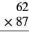 62નો 87 વડે ગુણાકાર કરવા માટેની ઊભી ગોઠવણી. |
| 7નો 62 વડે ગુણાકાર કરીને શરૂઆત કરો. 7નો ગુણાકાર 62ના એકમના સ્થાનના અંક વડે કરો. 4 ગુણનફળના એકમના સ્થાને લખો અને 1 દશકના સ્થાને આગળ લઈ જાઓ. | 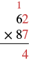 62નો 87 વડે ગુણાકાર કરવા માટેની ઊભી ગોઠવણી. લાલ અંકો આગળ લઈ જવાયેલી સંખ્યા (“1”, જે “6”ની ઉપર છે) અને પહેલા આંશિક ગુણનફળનો એકમનો અંક (“4”, જે રેખાની નીચે છે અને 7×2=14માંથી મળ્યો છે) દર્શાવે છે. |
| 7નો ગુણાકાર 62ના દશકના સ્થાનના અંક વડે કરો. આગળ લઈ જવાયેલો 1 દશક ઉમેરો. . ગુણનફળમાં 3 દશકના સ્થાને અને 4 સોના સ્થાને લખો. | 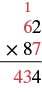 62નો 87 વડે ગુણાકાર છે. પહેલા આંશિક ગુણનફળ માટે 62 × 7 = 434 લખેલું છે. આગળ લઈ જવાયેલો 1 ઉપર છે; લાલ 6 એ મૂળ સંખ્યા 62નો દશકનો અંક છે. |
| પહેલું આંશિક ગુણનફળ 434 છે. | |
| હવે 0 મૂકો, આગલા આંશિક ગુણનફળના એકમના સ્થાનના 4ની નીચે. તે સ્થાન જાળવવા માટે છે, કારણ કે હવે 87ના દશકના સ્થાનના અંકનો 62 વડે ગુણાકાર કરીએ છીએ. 8નો ગુણાકાર 62ના એકમના સ્થાનના અંક વડે કરો. 6 ગુણનફળના આગળના એટલે દશકના સ્થાને લખો. 1 દશકના સ્થાને આગળ લઈ જાઓ. | 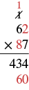 62નો 87 વડે ગુણાકાર છે. પહેલું આંશિક ગુણનફળ 434 છે. બીજા આંશિક ગુણનફળ માટે 8 × 2 = 16ના 6 દશક અને સ્થાન જાળવતો 0 નીચે લખીને 60 બનાવ્યું છે. આગળ લઈ જવાયેલો 1 ઉપર લખ્યો છે. |
| 8નો ગુણાકાર 6 વડે કરો, જે 62ના દશકના સ્થાનનો અંક છે. પછી આગળ લઈ જવાયેલો 1 દશક ઉમેરીને 49 મેળવો. ગુણનફળમાં 9 સોના સ્થાને અને 4 હજારના સ્થાને લખો. | 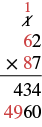 ઊભી ગોઠવણીમાં 62નો 87 વડે ગુણાકાર છે. પગલાંમાં 62 × 7 = 434 અને 62 × 80 = 4960 દર્શાવ્યાં છે. લાલ અંકો આગળ લઈ જવાયેલા અંકો અને બીજું આંશિક ગુણનફળ દર્શાવે છે. |
| બીજું આંશિક ગુણનફળ 4960 છે. આંશિક ગુણનફળોનો સરવાળો કરો. | 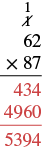 ઊભી ગોઠવણીમાં 62નો 87 વડે ગુણાકાર છે. આ પગલામાં આંશિક ગુણનફળો 434 અને 4960નો સરવાળો કરીને 5394 જવાબ મેળવ્યો છે. |
- ⓐ
- ⓑ
ઉકેલ
| ⓐ . | |
| ⓑ |
- ⓐ
- ⓑ
- ⓐ 540
- ⓑ 5,400
- ⓐ
- ⓑ
- ⓐ 750
- ⓑ 7,500
ઉકેલ
| પગલું | ઊભી ગોઠવણી |
|---|---|
| ઉપરની સંખ્યા | |
| નીચેની સંખ્યા | |
| ગુણાકાર કરો: 8(354) | |
| ગુણાકાર કરો: 3(354) | |
| ગુણાકાર કરો: 4(354) | |
| આંશિક ગુણનફળોનો સરવાળો કરો |
“354 ગુણ્યા 438”ના ગુણાકારની ઊભી ગોઠવણી. 354 ઉપરની સંખ્યા છે અને 438 બીજી સંખ્યા છે. 438ની નીચે ગુણાકારની રેખા છે. રેખાની નીચે 2,832 છે. 2832ની નોંધ છે “8નો 354 વડે ગુણાકાર કરો”. 2832ની નીચે 1,062 છે; 1062ની નોંધ છે “3નો 354 વડે ગુણાકાર કરો”. 1062ની નીચે 1,416 છે; 1416ની નોંધ છે “4નો 354 વડે ગુણાકાર કરો”. તેની નીચે રેખા અને રેખાની નીચે “155,052” છે, જેની નોંધ છે “આંશિક ગુણનફળોનો સરવાળો કરો”.
ઉકેલ
| પગલું | ઊભી ગોઠવણી |
|---|---|
| ઉપરની સંખ્યા | |
| નીચેની સંખ્યા | |
| ગુણાકાર કરો: 1(896) | |
| ગુણાકાર કરો: 0(896) | |
| ગુણાકાર કરો: 2(896) | |
| આંશિક ગુણનફળોનો સરવાળો કરો |
“896 ગુણ્યા 201”ના ગુણાકારની ઊભી ગોઠવણી. 896 ઉપરની સંખ્યા છે: 8 સોના સ્થાને, 9 દશકના સ્થાને અને 6 એકમના સ્થાને. 201 બીજી સંખ્યા છે: 2 સોના સ્થાને, 0 દશકના સ્થાને અને 1 એકમના સ્થાને. 201ની નીચે ગુણાકારની રેખા છે. રેખાની નીચે 896 છે: 8 સોના સ્થાને, 9 દશકના સ્થાને અને 6 એકમના સ્થાને. 896ની નોંધ છે “1નો 896 વડે ગુણાકાર કરો”. 896ની નીચે “000” છે: 0 હજારના સ્થાને, 0 સોના સ્થાને અને 0 દશકના સ્થાને. “000”ની નોંધ છે “0નો 896 વડે ગુણાકાર કરો”. “000”ની નીચે 1792 છે: 1 સો હજારના સ્થાને, 7 દસ હજારના સ્થાને, 9 હજારના સ્થાને અને 2 સોના સ્થાને. 1792ની નોંધ છે “2નો 896 વડે ગુણાકાર કરો”. તેની નીચે રેખા અને રેખાની નીચે “180,096” છે, જેની નોંધ છે “આંશિક ગુણનફળોનો સરવાળો કરો”.
| આનો ગુણાકાર કરવા | |
| પહેલાં ગુણાકાર કરો: | |
| પછી ગુણાકાર કરો: . |
શબ્દોમાં આપેલી વાતને ગણિતની લખાવટમાં ફેરવો
| ક્રિયા | શબ્દસમૂહ | ઉદાહરણ | પદાવલી |
|---|---|---|---|
| ગુણાકાર | ગુણ્યા ગુણનફળ બમણું |
ગુણ્યા આ સંખ્યાઓનું ગુણનફળ: અને આ સંખ્યાનું બમણું: |
ઉકેલ
| 12 અને 27નું ગુણનફળ | |
| ગણિતની લખાવટમાં ફેરવો. | |
| ગુણાકાર કરો. |
ઉકેલ
| બસો અગિયારનું બમણું | |
| ગણિતની લખાવટમાં ફેરવો. | 2(211) |
| ગુણાકાર કરો. | 422 |
વ્યવહારુ પ્રશ્નોમાં પૂર્ણ સંખ્યાઓનો ગુણાકાર કરો
ઉકેલ
| કુલ સંખ્યા માટે શબ્દોમાં લખો. | 4 અને 20નું ગુણનફળ |
| ગણિતની લખાવટમાં ફેરવો. | |
| ગુણાકાર કરો. | 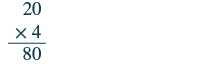 ઊભી ગોઠવણીમાં 20નો 4 વડે ગુણાકાર કરતાં 80 મળે છે. સફેદ પૃષ્ઠભૂમિ પર સ્પષ્ટ ઘેરા વાદળી અક્ષરોમાં લખેલું છે. |
| પ્રશ્નનો જવાબ આપવા વાક્ય લખો. | હમ્બર્ટોએ 80 ટપાલટિકિટ ખરીદી. |
ઉકેલ
| શબ્દોમાં લખો. | 4 કપનું બમણું |
| ગણિતની લખાવટમાં ફેરવો. | |
| ગુણાકાર કરીને સરળ કરો. | 8 |
| પ્રશ્નનો જવાબ આપવા વાક્ય લખો. | રીનાને 8 કપ પાણી જોઈએ, 4 કપ ચોખા માટે. |
ઉકેલ
| શબ્દોમાં લખો. | 8 અને 14નું ગુણનફળ |
| ગણિતની લખાવટમાં ફેરવો. | |
| ગુણાકાર કરીને સરળ કરો. | |
| પ્રશ્નનો જવાબ આપવા વાક્ય લખો. | વેનને આંગણાની પાકી બેઠકની જગ્યા માટે 112 લાદી જોઈએ. |
1 ચોરસ સેન્ટિમીટર
(1 ચો. સે.મી. અથવા 1 સે.મી.²)
1 ચોરસ ઇંચ
(1 ચો. ઇંચ અથવા 1 ઇંચ²)
બે ચોરસનું ચિત્ર; એક બીજા કરતાં મોટો છે. નાના ચોરસનું માપ 1 સેન્ટિમીટર × 1 સેન્ટિમીટર છે અને તેની નોંધ “1 ચોરસ સેન્ટિમીટર” છે. મોટા ચોરસનું માપ 1 ઇંચ × 1 ઇંચ છે અને તેની નોંધ “1 ચોરસ ઇંચ” છે.
લંબચોરસમાં 6 ખંડ છે. તે 2 ફૂટ ઊંચો અને 3 ફૂટ પહોળો છે. તેની નોંધ છે “2 ગુણ્યા 3 = 6 ચોરસ ફૂટ”.
ઉકેલ
| ક્ષેત્રફળ માટે શબ્દોમાં લખો. | 9 અને 12નું ગુણનફળ |
| ગણિતની લખાવટમાં ફેરવો. | |
| ગુણાકાર કરો. | |
| વાક્યમાં જવાબ આપો. | જેનના રસોડાની છતનું ક્ષેત્રફળ 108 ચોરસ ફૂટ છે. |
વધારાનાં ઑનલાઇન સંસાધનો જુઓ
મુખ્ય સંકલ્પનાઓ
| ક્રિયા | લખાવટ | પદાવલી | આ રીતે વાંચો | પરિણામ |
|---|---|---|---|---|
- શૂન્ય વડે ગુણાકારનો ગુણધર્મ
- કોઈ પણ સંખ્યા અને 0નું ગુણનફળ 0 છે.
- કોઈ પણ સંખ્યા અને 0નું ગુણનફળ 0 છે.
- ગુણાકારનો તટસ્થતાનો ગુણધર્મ
- કોઈ પણ સંખ્યા અને 1નું ગુણનફળ એ જ સંખ્યા છે.
- કોઈ પણ સંખ્યા અને 1નું ગુણનફળ એ જ સંખ્યા છે.
- ગુણાકારનો ક્રમવિનિમયનો ગુણધર્મ
- અવયવોનો ક્રમ બદલવાથી તેમનું ગુણનફળ બદલાતું નથી.
- અવયવોનો ક્રમ બદલવાથી તેમનું ગુણનફળ બદલાતું નથી.
- ગુણનફળ શોધવા બે પૂર્ણ સંખ્યાઓનો ગુણાકાર કરો.
- સરખી સ્થાનકિંમતના અંકો એકની નીચે એક આવે તેમ સંખ્યાઓ લખો.
- દરેક સ્થાનકિંમતના અંકોનો ગુણાકાર કરો.
- નીચેની સંખ્યાના એકમના સ્થાનથી શરૂ કરીને જમણેથી ડાબે જાઓ.
- નીચેની સંખ્યાનો ગુણાકાર ઉપરની સંખ્યાના એકમના અંક વડે, પછી દશકના અંક વડે અને એમ આગળ કરો.
- કોઈ સ્થાનકિંમતનું ગુણનફળ 9 કરતાં વધારે હોય, તો આગળના સ્થાને લઈ જાઓ.
- આંશિક ગુણનફળ લખો; તેની સ્થાનકિંમતના અંકો ઉપરની સંખ્યાઓના સરખા સ્થાનના અંકોની નીચે ગોઠવો. નીચેની સંખ્યાના દશકના સ્થાન માટે, પછી સોના સ્થાન માટે અને એમ આગળ આ જ પ્રક્રિયા કરો.
- દરેક વધારાના આંશિક ગુણનફળ સાથે સ્થાન જાળવવા એક શૂન્ય મૂકો.
- આંશિક ગુણનફળોનો સરવાળો કરો.
અભ્યાસથી નિપુણતા
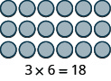
ચિત્રમાં રાખોડી વર્તુળો ગોઠવીને 3 × 6નો ગુણાકાર દર્શાવેલો છે.
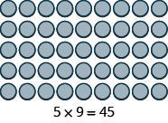
45 રાખોડી વર્તુળની લંબચોરસ ગોઠવણીમાં 5 હરોળ અને 9 સ્તંભ છે. નીચે “5 × 9 = 45” સમીકરણ હરોળ અને સ્તંભની સંખ્યાનું ગુણનફળ દર્શાવે છે.
| × | 0 | 1 | 2 | 3 | 4 | 5 | 6 | 7 | 8 | 9 |
|---|---|---|---|---|---|---|---|---|---|---|
| 0 | 0 | 0 | 0 | 0 | 0 | 0 | 0 | 0 | ||
| 1 | 0 | 1 | 2 | 3 | 6 | 7 | 8 | |||
| 2 | 2 | 4 | 6 | 8 | 12 | 18 | ||||
| 3 | 0 | 6 | 12 | 15 | 21 | 27 | ||||
| 4 | 0 | 4 | 16 | 20 | 28 | 32 | ||||
| 5 | 0 | 5 | 10 | 15 | 30 | 40 | ||||
| 6 | 0 | 6 | 12 | 24 | 42 | 54 | ||||
| 7 | 14 | 21 | 35 | 56 | 63 | |||||
| 8 | 0 | 8 | 24 | 48 | 64 | |||||
| 9 | 0 | 9 | 18 | 36 | 45 | 72 |
11 સ્તંભ અને 11 હરોળના કોષ્ટકનું ચિત્ર. પહેલી હરોળ અને પહેલા સ્તંભનાં ખાનાં બીજા ખાનાં કરતાં ઘેરા રંગનાં છે. પહેલા સ્તંભમાં આ મૂલ્યો છે: “×; 0; 1; 2; 3; 4; 5; 6; 7; 8; 9”. બીજા સ્તંભમાં આ મૂલ્યો છે: “0; 0; 0; ખાલી; 0; 0; 0; 0; ખાલી; 0; 0”. ત્રીજા સ્તંભમાં આ મૂલ્યો છે: “1; 0; 1; 2; ખાલી; 4; 5; 6; ખાલી; 8; 9”. ચોથા સ્તંભમાં આ મૂલ્યો છે: “2; 0; 2; 4; 6; ખાલી; 10; 12; 14; ખાલી; 18”. પાંચમા સ્તંભમાં આ મૂલ્યો છે: “3; ખાલી; 3; 6; ખાલી; ખાલી; 15; ખાલી; 21; 24; ખાલી”. છઠ્ઠા સ્તંભમાં આ મૂલ્યો છે: “4; 0; ખાલી; 8; 12; 16; ખાલી; 24; ખાલી; ખાલી; 36”. સાતમા સ્તંભમાં આ મૂલ્યો છે: “5; 0; ખાલી; ખાલી; 15; 20; ખાલી; ખાલી; 35; ખાલી; 45”. આઠમા સ્તંભમાં આ મૂલ્યો છે: “6; 0; 6; 12; ખાલી; ખાલી; 30; ખાલી; ખાલી; 48; ખાલી”. નવમા સ્તંભમાં આ મૂલ્યો છે: “7; 0; 7; ખાલી; 21; 28; ખાલી; 42; ખાલી; ખાલી; ખાલી”. દસમા સ્તંભમાં આ મૂલ્યો છે: “8; ખાલી; 8; ખાલી; ખાલી; 32; 40; ખાલી; 56; 64; 72”. અગિયારમા સ્તંભમાં આ મૂલ્યો છે: “9; 0; ખાલી; 18; 27; ખાલી, ખાલી; 54; 63; ખાલી; ખાલી”.
| × | 0 | 1 | 2 | 3 | 4 | 5 | 6 | 7 | 8 | 9 |
|---|---|---|---|---|---|---|---|---|---|---|
| 0 | 0 | 0 | 0 | 0 | 0 | 0 | 0 | 0 | 0 | 0 |
| 1 | 0 | 1 | 2 | 3 | 4 | 5 | 6 | 7 | 8 | 9 |
| 2 | 0 | 2 | 4 | 6 | 8 | 10 | 12 | 14 | 16 | 18 |
| 3 | 0 | 3 | 6 | 9 | 12 | 15 | 18 | 21 | 24 | 27 |
| 4 | 0 | 4 | 8 | 12 | 16 | 20 | 24 | 28 | 32 | 36 |
| 5 | 0 | 5 | 10 | 15 | 20 | 25 | 30 | 35 | 40 | 45 |
| 6 | 0 | 6 | 12 | 18 | 24 | 30 | 36 | 42 | 48 | 54 |
| 7 | 0 | 7 | 14 | 21 | 28 | 35 | 42 | 49 | 56 | 63 |
| 8 | 0 | 8 | 16 | 24 | 32 | 40 | 48 | 56 | 64 | 72 |
| 9 | 0 | 9 | 18 | 27 | 36 | 45 | 54 | 63 | 72 | 81 |
11 સ્તંભ અને 11 હરોળના કોષ્ટકનું ચિત્ર. પહેલી હરોળ અને પહેલા સ્તંભનાં ખાનાં બીજા ખાનાં કરતાં ઘેરા રંગનાં છે. ખાનાંમાં સંખ્યાઓ અને પ્રશ્નના જવાબ છે.
| × | 0 | 1 | 2 | 3 | 4 | 5 | 6 | 7 | 8 | 9 |
|---|---|---|---|---|---|---|---|---|---|---|
| 0 | 0 | 0 | 0 | 0 | 0 | 0 | 0 | 0 | ||
| 1 | 0 | 1 | 2 | 4 | 5 | 7 | 9 | |||
| 2 | 0 | 4 | 8 | 10 | 14 | 16 | ||||
| 3 | 3 | 9 | 18 | 24 | ||||||
| 4 | 0 | 4 | 8 | 12 | 24 | 28 | 36 | |||
| 5 | 0 | 5 | 15 | 20 | 30 | 35 | 40 | |||
| 6 | 12 | 18 | 36 | 42 | 54 | |||||
| 7 | 0 | 7 | 21 | 35 | 56 | 63 | ||||
| 8 | 0 | 8 | 16 | 32 | 48 | 64 | 72 | |||
| 9 | 18 | 27 | 36 | 63 |
11 સ્તંભ અને 11 હરોળના ગુણાકાર કોષ્ટકમાં ઉપરની હરોળ અને ડાબા સ્તંભ પર 0થી 9 સુધીના અંક છે. કેટલાક ગુણનફળ આપેલા છે અને કેટલાક ખાનાં ખાલી છે; ખાલી ખાનાં ભરવાનાં છે. આ ચિત્રમાં ગુલાબી શૂન્ય નથી.
| × | 3 | 4 | 5 | 6 | 7 | 8 | 9 |
|---|---|---|---|---|---|---|---|
| 4 | |||||||
| 5 | |||||||
| 6 | |||||||
| 7 | |||||||
| 8 | |||||||
| 9 |
8 સ્તંભ અને 7 હરોળના કોષ્ટકનું ચિત્ર. પહેલી હરોળ અને પહેલા સ્તંભનાં ખાનાં બીજા ખાનાં કરતાં ઘેરા રંગનાં છે. પહેલી હરોળ કે પહેલા સ્તંભ સિવાયનાં બધાં ખાનાં ખાલી છે. પહેલા સ્તંભમાં આ મૂલ્યો છે: “×; 4; 5; 6; 7; 8; 9”. પહેલી હરોળમાં આ મૂલ્યો છે: “×; 3; 4; 5; 6; 7; 8; 9”.
| × | 3 | 4 | 5 | 6 | 7 | 8 | 9 |
|---|---|---|---|---|---|---|---|
| 4 | 12 | 16 | 20 | 24 | 28 | 32 | 36 |
| 5 | 15 | 20 | 25 | 30 | 35 | 40 | 45 |
| 6 | 18 | 24 | 30 | 36 | 42 | 48 | 54 |
| 7 | 21 | 28 | 35 | 42 | 49 | 56 | 63 |
| 8 | 24 | 32 | 40 | 48 | 56 | 64 | 72 |
| 9 | 27 | 36 | 45 | 54 | 63 | 72 | 81 |
8 સ્તંભ અને 7 હરોળના કોષ્ટકનું ચિત્ર. પહેલી હરોળ અને પહેલા સ્તંભનાં ખાનાં બીજા ખાનાં કરતાં ઘેરા રંગનાં છે. ખાનાંમાં સંખ્યાઓ અને પ્રશ્નના જવાબ છે.
| × | 4 | 5 | 6 | 7 | 8 | 9 |
|---|---|---|---|---|---|---|
| 3 | ||||||
| 4 | ||||||
| 5 | ||||||
| 6 | ||||||
| 7 | ||||||
| 8 | ||||||
| 9 |
પ્રકાશન નોંધ: 7 સ્તંભ અને 8 હરોળના કોષ્ટકનું ચિત્ર. પહેલી હરોળ અને પહેલા સ્તંભનાં ખાનાં બીજા ખાનાં કરતાં ઘેરા રંગનાં છે. પહેલી હરોળ કે પહેલા સ્તંભ સિવાયનાં બધાં ખાનાં ખાલી છે. પહેલા સ્તંભમાં આ મૂલ્યો છે: “×; 3; 4; 5; 6; 7; 8; 9”. પહેલી હરોળમાં આ મૂલ્યો છે: “×; 4; 5; 6; 7; 8; 9”.
| × | 3 | 4 | 5 | 6 | 7 | 8 | 9 |
|---|---|---|---|---|---|---|---|
| 6 | |||||||
| 7 | |||||||
| 8 | |||||||
| 9 |
8 સ્તંભ અને 5 હરોળના કોષ્ટકનું ચિત્ર. પહેલી હરોળ અને પહેલા સ્તંભનાં ખાનાં બીજા ખાનાં કરતાં ઘેરા રંગનાં છે. પહેલી હરોળ કે પહેલા સ્તંભ સિવાયનાં બધાં ખાનાં ખાલી છે. પહેલી હરોળમાં આ મૂલ્યો છે: “×; 3; 4; 5; 6; 7; 8; 9”. પહેલા સ્તંભમાં આ મૂલ્યો છે: “×; 6; 7; 8; 9”.
| × | 3 | 4 | 5 | 6 | 7 | 8 | 9 |
|---|---|---|---|---|---|---|---|
| 6 | 18 | 24 | 30 | 36 | 42 | 48 | 54 |
| 7 | 21 | 28 | 35 | 42 | 49 | 56 | 63 |
| 8 | 24 | 32 | 40 | 48 | 56 | 64 | 72 |
| 9 | 27 | 36 | 45 | 54 | 63 | 72 | 81 |
8 સ્તંભ અને 5 હરોળના કોષ્ટકનું ચિત્ર. પહેલી હરોળ અને પહેલા સ્તંભનાં ખાનાં બીજા ખાનાં કરતાં ઘેરા રંગનાં છે. ખાનાંમાં સંખ્યાઓ અને પ્રશ્નના જવાબ છે.
| × | 6 | 7 | 8 | 9 |
|---|---|---|---|---|
| 3 | ||||
| 4 | ||||
| 5 | ||||
| 6 | ||||
| 7 | ||||
| 8 | ||||
| 9 |
5 સ્તંભ અને 8 હરોળના કોષ્ટકનું ચિત્ર. પહેલી હરોળ અને પહેલા સ્તંભનાં ખાનાં બીજા ખાનાં કરતાં ઘેરા રંગનાં છે. પહેલી હરોળ કે પહેલા સ્તંભ સિવાયનાં બધાં ખાનાં ખાલી છે. પહેલા સ્તંભમાં આ મૂલ્યો છે: “×; 3; 4; 5; 6; 7; 8; 9”. પહેલી હરોળમાં આ મૂલ્યો છે: “×; 6; 7; 8; 9”.
| × | 5 | 6 | 7 | 8 | 9 |
|---|---|---|---|---|---|
| 5 | |||||
| 6 | |||||
| 7 | |||||
| 8 | |||||
| 9 |
પ્રકાશન નોંધ: 6 સ્તંભ અને 6 હરોળના કોષ્ટકનું ચિત્ર. પહેલી હરોળ અને પહેલા સ્તંભનાં ખાનાં બીજા ખાનાં કરતાં ઘેરા રંગનાં છે. પહેલી હરોળ કે પહેલા સ્તંભ સિવાયનાં બધાં ખાનાં ખાલી છે. પહેલા સ્તંભમાં આ મૂલ્યો છે: “×; 5; 6; 7; 8; 9”. પહેલી હરોળમાં આ મૂલ્યો છે: “×; 5; 6; 7; 8; 9”.
| × | 5 | 6 | 7 | 8 | 9 |
|---|---|---|---|---|---|
| 5 | 25 | 30 | 35 | 40 | 45 |
| 6 | 30 | 36 | 42 | 48 | 54 |
| 7 | 35 | 42 | 49 | 56 | 63 |
| 8 | 40 | 48 | 56 | 64 | 72 |
| 9 | 45 | 54 | 63 | 72 | 81 |
ઘેરા વાદળીલીલા અને રાખોડી રંગનું ગુણાકાર કોષ્ટક 5થી 9 સુધીની સંખ્યાઓનાં ગુણનફળ દર્શાવે છે. હરોળ અને સ્તંભ પર આ સંખ્યાઓ લખેલી છે અને ખાનાંમાં તેમના ગુણાકારનાં પરિણામ છે.
| × | 6 | 7 | 8 | 9 |
|---|---|---|---|---|
| 6 | ||||
| 7 | ||||
| 8 | ||||
| 9 |
5 સ્તંભ અને 5 હરોળનું ગુણાકાર કોષ્ટક. ઉપરની હરોળ અને ડાબા સ્તંભમાં 6, 7, 8, 9 છે. અંદરના 16 ખાનાં ખાલી છે અને ભરવાનાં છે.
- ⓐ
- ⓑ
- ⓐ 42
- ⓑ 42
- ⓐ
- ⓑ
રોજિંદા જીવનમાં ગણિત
લેખન અભ્યાસ
સ્વમૂલ્યાંકન
| હું આ કરી શકું છું… | વિશ્વાસપૂર્વક | થોડી મદદથી | ના—મને સમજાતું નથી! |
|---|---|---|---|
| ગુણાકારની લખાવટનો ઉપયોગ કરવો. | |||
| પૂર્ણ સંખ્યાઓનો ગુણાકાર નમૂના દ્વારા દર્શાવવો. | |||
| પૂર્ણ સંખ્યાઓનો ગુણાકાર કરવો. | |||
| શબ્દોમાં આપેલી વાતને ગણિતની લખાવટમાં ફેરવવી. | |||
| વ્યવહારુ પ્રશ્નોમાં પૂર્ણ સંખ્યાઓનો ગુણાકાર કરવો. |
ગુણાકારનાં કૌશલ્યોનું સ્વમૂલ્યાંકન કોષ્ટક: લખાવટનો ઉપયોગ, નમૂનો બનાવવો, પૂર્ણ સંખ્યાઓનો ગુણાકાર, શબ્દસમૂહોને ગણિતની લખાવટમાં ફેરવવા અને વ્યવહારુ પ્રશ્નોમાં ગુણાકાર કરવો.